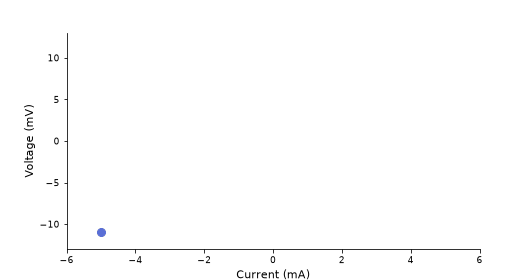

Properties
Conductivity
Sheet resistance and conductivity.
Steps
Add MeasurementAdd a measurement (current, voltage, geometry) or import Ossila files.Set Thickness for Whole SampleSet the film thickness for the sample.- Rs = (π / ln 2)·V/I with the geometry correction; σ = 1 / (Rs·t).
Export Figure (PNG/PDF/SVG)...Export the table or the figure.
How it works

Worked example
V/I = 2.2 Ω gives Rs = 4.532 × 2.2 = 9.97 Ω/sq. For a 1 µm film, σ = 1 / (9.97 Ω × 1e-4 cm) ≈ 1000 S/cm.